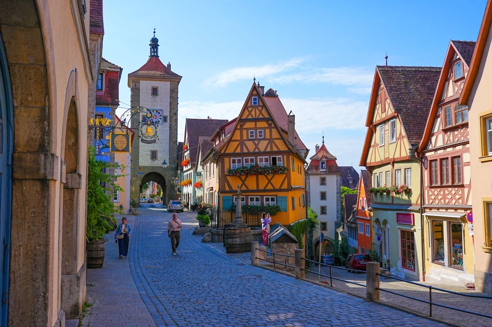
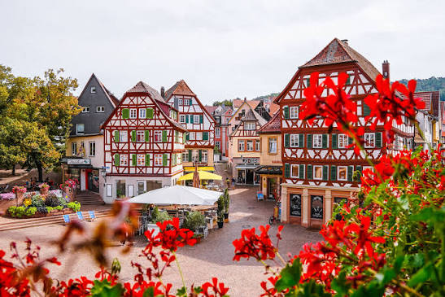

A decently sized city of history.
The Capital of Schwaben

Stuttgart is the capital and largest city of the German state of Baden-Württemberg, located in southwestern Germany. With approximately 630,000 inhabitants, it is the sixth-largest city in Germany and serves as an important economic, cultural, and administrative center.
The city is situated in a valley surrounded by hills, forests, and vineyards, giving it a distinctive landscape. Stuttgart has a long history dating back to the 10th century, when it was established as a horse-breeding settlement. It later became the capital of the Kingdom of Württemberg.
Today, Stuttgart is internationally recognized as a center of the automotive industry. Major companies such as Mercedes-Benz and Porsche have their headquarters in the region. Both manufacturers operate museums showcasing their history and technological developments. The city is also home to numerous engineering, research, and technology institutions.
Stuttgart offers several cultural attractions, including the New Palace, the Old Castle, the State Gallery, and the Stuttgart State Opera. Its largest annual celebrations include the Cannstatter Volksfest, one of Germany's biggest beer festivals, and the Stuttgart Christmas Market.
Public transportation consists of suburban trains (S-Bahn), light rail (Stadtbahn), buses, and regional railway connections. Stuttgart Hauptbahnhof serves as a major railway hub connecting the city to other German and European destinations.
Despite its industrial importance, Stuttgart offers extensive green spaces, including Schlossgarten and Rosensteinpark. Its combination of economic strength, cultural heritage, educational institutions, and natural surroundings makes Stuttgart one of Germany's most significant cities.
The Länd

Baden-Württemberg is a federal state in southwestern Germany, bordering France, Switzerland, and the German states of Bavaria, Hesse, and Rhineland-Palatinate. With approximately 11.2 million inhabitants, it is Germany's third-largest state by population. Its capital and largest city is Stuttgart.
The state was established in 1952 through the merger of Württemberg-Baden, Württemberg-Hohenzollern, and Baden. Today, it is one of Germany's most economically prosperous and industrially developed regions.
Baden-Württemberg is particularly renowned for its automotive and engineering industries. Major companies such as Mercedes-Benz, Porsche, Bosch, and SAP are headquartered here. The state is also an important center for scientific research, innovation, and higher education, with prestigious universities in Heidelberg, Freiburg, Tübingen, and Karlsruhe.
Geographically, Baden-Württemberg features diverse landscapes, including the Black Forest, the Swabian Jura, the Rhine Valley, and Lake Constance. These regions attract visitors through their natural beauty, hiking trails, historic towns, and recreational opportunities.
The state has a rich cultural heritage influenced by its historical regions of Baden, Württemberg, and Swabia. Traditional cuisine includes Spätzle, Maultaschen, and Black Forest cake. Popular attractions include Heidelberg Castle, Hohenzollern Castle, and the historic city of Ulm.
Baden-Württemberg is also known for its strong education system, extensive transportation infrastructure, and environmental initiatives. Combining industrial innovation, historical traditions, and scenic landscapes, it plays a central role in Germany's economy and cultural identity.
Be Prepaired
| Category | Item | Cost |
| Transport (Expencive) | Single Fare | 3.30 € |
| Day Fare (Whole Network) | 17.20 € | |
| Week Fare (Whole Network) | 102.00 € | |
| ccommodation and Food | Hotel a night | 100 € |
| Restaurant | 25 € |